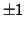
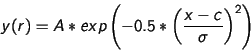
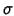
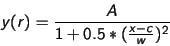
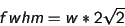
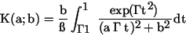
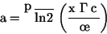
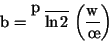
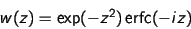

The spectral line fitting window allows you to measure the wavelength and equivalent width of emission or absorption lines and to fit various standard profiles to the lines.
The standard profiles offered are Gaussian, Lorentzian and Voigt, as well as a model independent intensity analysis measure.

Background type: Choose a type of background estimate to be subtracted from the spectrum before fitting. The choices are Constant and Polynomial. If you have already subtracted the background from the spectrum, or have applied a normalisation (so that the background is flat, usually with a value of 1) then you need to choose Constant and provide a suitable value. Otherwise choose Polynomial and select a spectrum from the list in Background fit.
Background fit: For emission lines you would normally define a background spectrum using the polynomial fitting tool. In this case select the Polynomial option and choose the background spectrum you have created. Note that you can actually use any spectrum from the global list as the background (so you are not restricted to what SPLAT-VO, provides) but if you choose the same spectrum as is being measured then a background of 0 is assumed.
The default background should be set to the first polynomial found on the global list.
Use error as weights: If your spectrum has associated error measurements then you can select this checkbox to use the errors as weights in the fitting procedure.
Coordinate ranges: This table shows the upper and lower coordinate range for each line that you want to measure.
To add a line to this list press the Add button. Now drag out a region on the plot display area that encompasses the spectral line. You should now see a yellow rectangle over the line:

Note that the rectangle is just defining a range, not an area, so you just need to worry about its width and position along the X axis, not its height.
To adjust the rectangle position select it and either drag it around, or use the grips on the exterior to resize it. You can see the physical extent of the region in the Coordinate ranges: table. To set these to a known value double click on the value you'd like to set, make the change, and then press <Return> to apply it.
The extents of lines can be saved to a simple text file and re-read. The format is simple. It should have two fields separated by whitespace or commas. Comments are indicated by lines starting with a hash (#) and are ignored.
Types of fit:
Once you have defined the extents of your spectral lines and chosen a background, you can proceed to make the measurements you want. Just select the types of fit you want from the list Gaussian, Lorentzian and Voigt. Note you can de-select all these and just get a Quick measurement.All types except Quick use a non-linear least squares (Levenberg-Marquardt) minimisation stage to perform the actual fit of the model to the data (possibly with weighting, if the spectrum has any error measurements). So it is necessary to have some idea of the shape of the line, before attempting to fit it. This job is done by the Quick fit, which is compulsory. The description of each of the types and what their measurements represent is given below.
Quick: The default line measurement type. This is based on the ABLINE technique described in the FIGARO documentation. This just uses an analysis of the intensities in the selected region and the chosen background. The results you get are:
- ID, just a unique integer to label the line. This is the same for all fits.
- Peak, the peak, background subtracted, intensity in the region. Negative for absorption lines.
- Centre, the position of the median value i.e. that for which half of the total, background subtracted, area of the line, within the given region, lies to the left and right.
- Width, width of the line. For a Gaussian this would be  standard deviations wide.
- Equiv, the equivalent width of the line. This will be 0 if a zero background is given or assumed.
- Asym, an asymmetry value for the line. This is a measure of the relative displacement of the centre of the line from the centre as measured by the upper and lower half widths.
Gaussian: The formula used for the Gaussian is:

where A is the scale height, r is the distance from the centre, c is the centre, x the distance from the origin and  is the Gaussian sigma. The y values are background subtracted.The values measured for this line shape are:
- ID, integer identifier (same as other fits).
- Peak, the Gaussian peak (A).
- Centre, the position of the Gaussian peak (c).
- Width, the Gaussian sigma ().
- Flux, the integrated flux of the Gaussian.
- Rms, the root mean square difference between the Gaussian and the line data.
Lorentzian: The formula used for the Lorentzian is:

where A is the scale height, r is the distance from the centre, c is the centre, x the distance from the origin and w the Lorentzian width. The y values are background subtracted. The full width half maximum (fwhm) of the curve is:

The values measured for this line shape are:
- ID, integer identifier (same as other fits).
- Peak, the Lorentzian peak (A).
- Centre, the position of the Lorentzian peak (c).
- Width, the Lorentzian width (w).
- Flux, the integrated flux of the Lorentzian.
- Rms, the root mean square difference between the Lorentzian and the line data.
Voigt: The formula for a Voigt profile (a convolution of a Gaussian and Lorentzian) is:

where:

and

In these equations c is the central wavelength, x the distance from the origin, is the Gaussian width and w the Lorentzian width. Which is complex to solve. However, if we take a complex variable z=a+ib, then the Voigt function is, within a scale factor (A), also the real part of the complex error function:

which has been approximated by various numerical codes. Using this fact with a non-linear minimisation routine (plus some derivatives) is how SPLAT performs its Voigt fitting.The values measured for this line shape are:
- ID, integer identifier (same as other fits).
- Peak, the Voigt peak (A).
- Centre, the position of the Voigt peak (c).
- Gwidth, the Gaussian width ().
- Lwidth, the Lorentzian width (w).
- Flux, the integrated flux of the Voigt profile.
- Rms, the root mean square difference between the Voigt and the line data.
SPLAT-VO -- A VO-enabled Spectral Analysis Tool